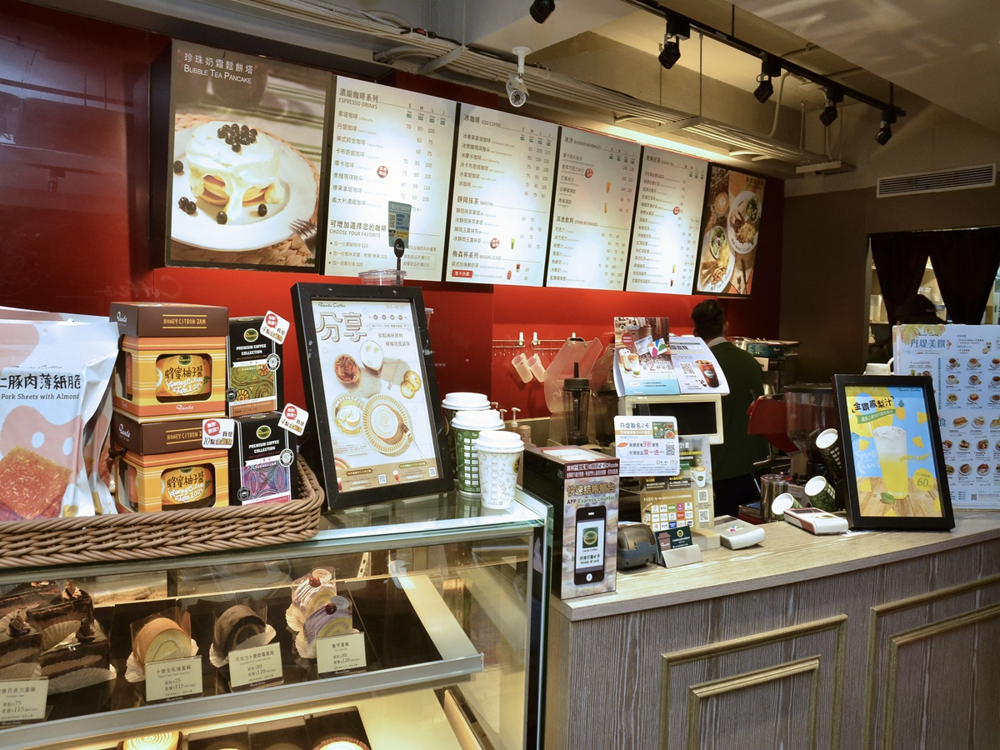

圖片來源：今周刊
今周刊 / 科技線上
由於外食人口龐大，台灣餐飲業營收商機可觀，根據經濟部統計處的資料顯示，2018年我國餐飲業營業額高達7775億元！因應消費者求新求變求快求好的需求，數位科技不斷導入，餐飲業有了全新的樣貌，餐飲外送、機器人送餐、自助點餐機、多元支付…等，都已經是現在進行式，而吸引新客、黏住熟客、提高離峰時段消費、虛實整合行銷…等，更成為餐飲業決戰未來的新零售關鍵！

圖片來源：今周刊
1993年11月，丹堤咖啡在台北市南京東路開了第一家門市，從此，這個有著綠底白字商標的在地品牌，陪伴台灣人走過二十多個年頭，在全國擁有百家門市，深入各地的社區、商圈、校園、廠區，也成為台灣歷史最悠久的在地連鎖咖啡品牌。丹堤咖啡持續導入創新科技應用，在App儲值支付、行動購物、電子票券、行動支付、自助點餐機等皆領先同業腳步，提供顧客創新消費體驗，積極推動O2O虛實整合，實現智慧商務新零售服務。
推出咖啡寄杯、自取取件服務 體驗智慧商務
由於提供的飲品、餐點品項豐富，營業時間又跨度早餐、早午餐、中餐、晚餐等時段，因應消費習慣與喜好的變化，為了要在競爭激烈的餐飲產業中勝出，丹堤咖啡副總經理徐恒鈞強調，丹堤咖啡積極導入數位應用，例如在2013年台灣電子票券尚未發達時，就自行研發電子票券系統，建置丹堤行動購物網，銷售自用(B2C)及送禮(B2C2C)的餐飲電子票券，將咖啡、餐點等實體通路商品轉換成為虛擬條碼，再藉由簡訊、電子郵件等各種通訊管道傳送分享。
今年七月，丹堤咖啡推出線上「咖啡寄杯」服務，祭出各式咖啡飲品買六送二的優惠，並且同步推出「美食寄餐」服務，提供顧客買九送一的優惠價格，消費者以優惠的價格上網預購，將咖啡或餐點寄存在自己專屬的帳戶，在丹堤咖啡的任何一家分店都可以隨時兌換享用，透過「大量購買、跨店使用、分次取貨」的高便利性與超值優惠，吸引新客、黏住熟客。
徐恒鈞進一步說明，丹堤咖啡在推出「線上咖啡寄杯」後，緊接著在10月初又推出「線下自助取件」服務，消費者在丹堤官網、APP及Yahoo、LINE、Gomaji、17Life等電商平台購買餐飲票券後，皆可以到門市的自助點餐機掃瞄商品條碼，輕鬆兌換購買的咖啡，落實「無人化自助取件服務」，而後端廚房也能及時接收自助點餐機的資訊，立即製作咖啡餐點，再透過取餐震動器通知消費者取餐，省去消費者排隊兌換結帳的麻煩，也降低門市尖峰時段的櫃台排隊人潮，讓點餐、候餐、取餐的過程更為精準、快速、便利。
發動離峰促銷 行動支付全到位
強化尖峰時段服務效率、提升離峰時段來店客群，永遠是餐飲業的挑戰！2015年丹堤咖啡透過虛擬通路行銷，發動離峰促銷，推出僅能使用於晚間離峰時段或外帶的「條件式」電子票券，陸續在Yahoo、LINE、Gomaji、17Life等電商平台上架銷售，為消費者提供更優惠的價格，也提高實體門市在離峰時段的人潮與業績。
2017年6月，丹堤咖啡再度領先同業，在全台門市提供多元支付服務，囊括QR Code掃碼、NFC感應、RFID感應的支付方式，將多達十五種行動支付一次整合到位，當然也包括自行研發的丹堤儲值App與丹堤e卡，不論消費者使用哪一種行動支付工具，都可以在點餐完畢後直接選擇喜愛的支付品牌付款，享受零錢包的購物體驗。
導入自助點餐機 服務促銷一級棒
台灣餐飲業面臨人力短缺問題與日漸高漲的薪資成本，前場無人化服務的「自助點餐機」成為解方！2017年10月丹堤咖啡創連鎖咖啡業之先，在指定門市同步建置行動支付自助點餐機。消費者只要跟隨著螢幕上的引導選擇內用外帶、商品類別、商品內容、發票內容、拿取呼叫器、再以行動支付結帳，全程只需3分鐘就完成點餐，輕鬆入座等待咖啡餐點製作。
自助點餐機的促銷功力更讓丹堤咖啡驚豔！徐恒鈞強調，以往消費者在櫃檯點購套餐之後，透過收銀同仁推薦加價購的成功機率僅有2.8%，但是透過自助點餐機導引固定加價購的流程，消費者進行加價購的成功機率跳升至14.2%，對於提高客單價貢獻良多！
圖片來源：今周刊
在導入創新智慧科技的過程中，丹堤咖啡也曾多次遭逢「卡關」，例如2015年曾經導入手機取餐通知，試圖取代取餐震動器，卻因為消費者使用意願不高、震動通知時間過短…等因素而失敗。此外，今年推出咖啡寄杯服務時，針對會員註冊開發e-mail認證功能，但上線後卻因為註冊過於踴躍而塞車，並引發電子報發送系統認定為垃圾郵件，因此停止寄送認證e-mail，延遲消費者註冊認證的時效。
展望未來，在行銷策略上，丹堤咖啡期待逐步提升熟客會員忠誠度，並且擴大定義熟客，吸引更多的潛在熟客，並且整合儲值卡、會員、行動購物等線上線下消費者資料庫，也將持續跨業合作，帶給消費者最佳的餐飲體驗。
徐恒鈞副總表示，科技應用與服務溫度就像是天秤的兩端，必須找尋合適的平衡點，如：人機協作，尤其是餐飲服務業，在不斷科技創新的同時，更須回歸原點、莫忘初衷。丹堤咖啡導入各種智慧科技，不僅是為了提升品牌的科技含量，更是為了解決消費者的痛點，讓購物更加便利、服務更有溫度，也讓門市同仁有更多時間與精神，用「心」製作每一杯好咖啡。(轉載自今周刊)